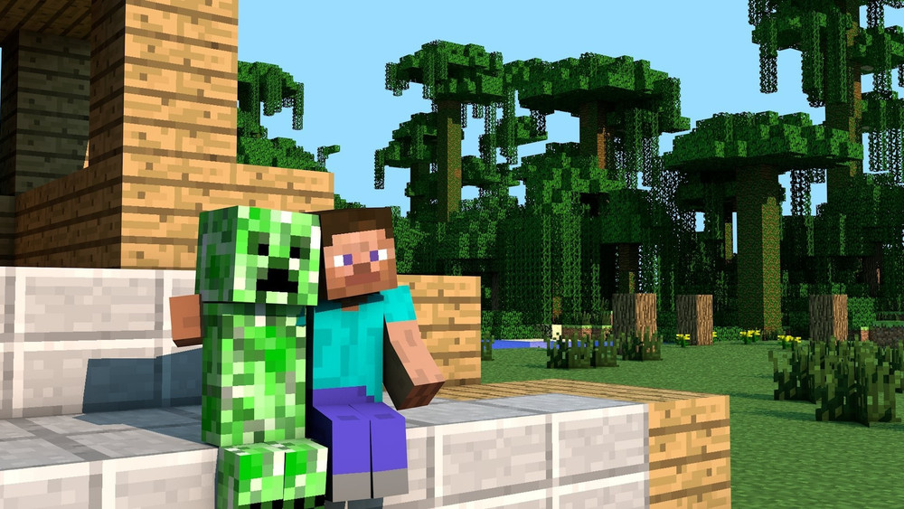

Historia de Minecraft
Creación del juego
Minecraft fue creado por Markus "Notch" Persson, un desarrollador sueco, en 2009. Inicialmente fue lanzado como un proyecto independiente llamado "Cave Game" antes de ser renombrado a Minecraft. Su primer lanzamiento público fue una versión alfa, que rápidamente ganó popularidad gracias a su concepto innovador: un mundo completamente editable por bloques.
Evolución y versiones
El juego evolucionó rápidamente. Se lanzaron versiones beta, y finalmente la versión completa en 2011. Con los años, Minecraft introdujo:
- Modos de juego: Supervivencia, Creativo, Aventura y Espectador.
- Dimensiones como el Nether y el End.
- Actualizaciones masivas como “The Update Aquatic”, “Village & Pillage” y “Caves & Cliffs”.
- Compatibilidad con múltiples plataformas: PC, consolas y dispositivos móviles.
Impacto cultural
Minecraft se convirtió en un fenómeno cultural. Es usado en educación, en la enseñanza de programación, matemáticas y diseño. Además, su comunidad creó millones de mods, mapas personalizados y servidores masivos de juego.